Fotos seleccionadas para la página
39 fotos de trabajos reales de Bordados Yussi, agrupadas por sección. Si quieren cambiar alguna, basta con indicar su número.
Dotación empresarial 6
Recorrido con scroll: 3 bloques de texto, 2 fotos por bloque.
1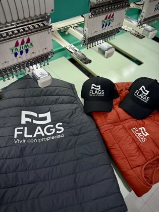
Bloque 1 · Chaleco, chaqueta y gorras de Flags2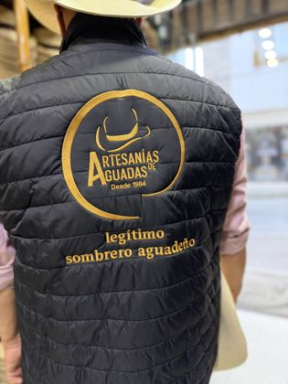
Bloque 1 · Chaleco de Artesanías de Aguadas en uso3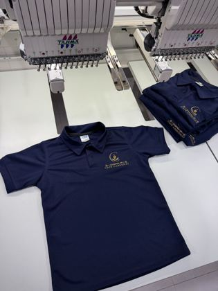
Bloque 2 · Polo azul marino recién bordado4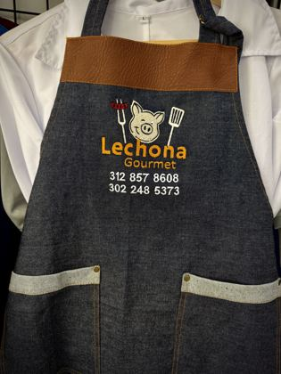
Bloque 2 · Delantal de jean para gastronomía5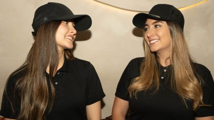
Bloque 3 · Equipo con polo y gorra bordada6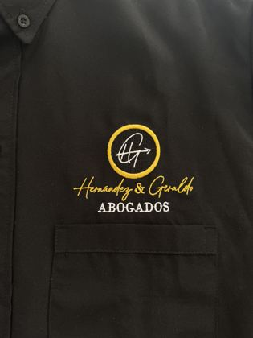
Bloque 3 · Camisa de oficina con logo bordado Uniformes antifluido 7
7Delantal antifluido repeliendo agua8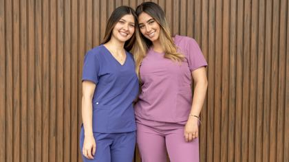
Conjuntos índigo y malva9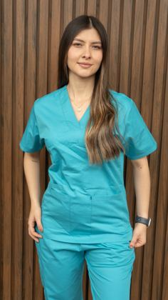
Conjunto verde agua10Bata de laboratorio11Chaqueta de chef blanca12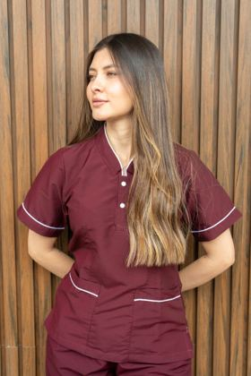
Conjunto vinotinto13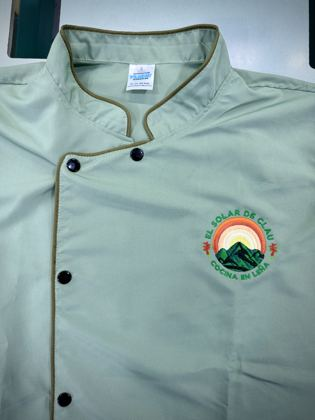
Chaqueta de chef con logo bordado Ropa industrial 5
14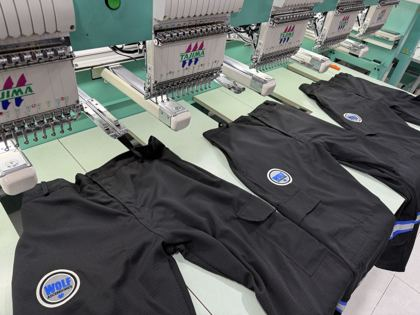
Pantalones con cinta reflectiva15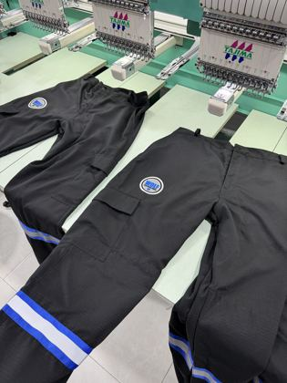
Detalle de cinta reflectiva y bolsillos16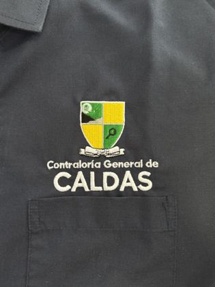
Camisa institucional con escudo17Identificación de cargo bordada18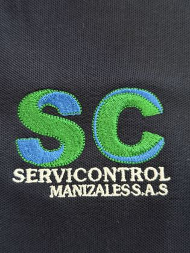
Camisa de trabajo con logo Uniformes escolares 2
Solo detalles por ahora; las fotos de cuerpo entero quedan pendientes de confirmación.
19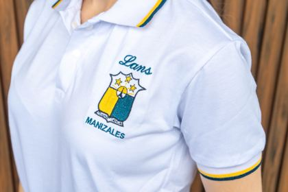
Escudo bordado y ribete del polo20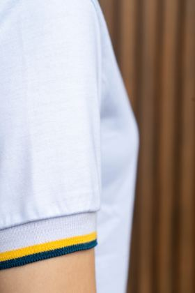
Manga con ribete institucional Servicio de bordado 8
21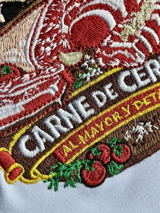
Bordado a todo color22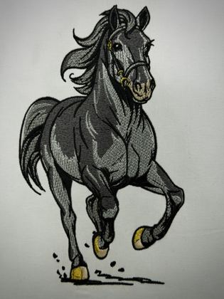
Degradados en hilo23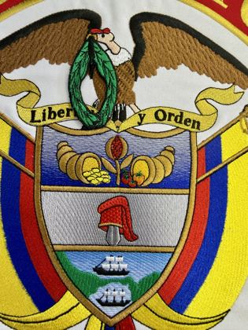
Escudo de alta densidad24Parche institucional25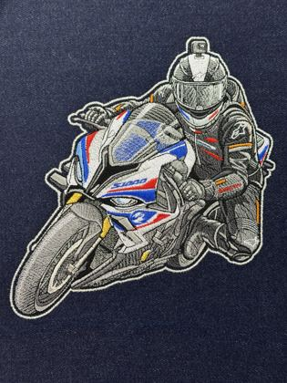
Ilustración compleja sobre tela oscura26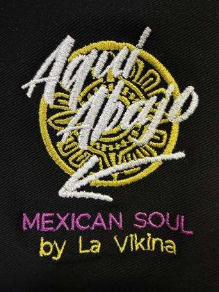
Hilo metalizado27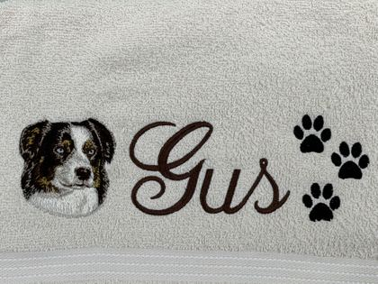
Bordado personalizado en toalla28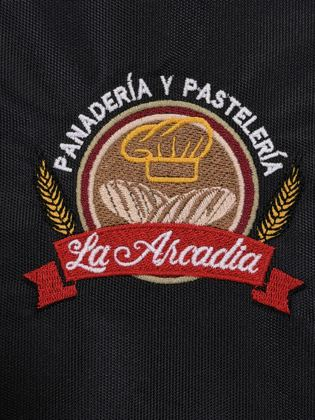
Logo de comercio local Nuestro proceso 6
Las fotos de confección se agregarán si los videos de la planta dan cuadros nítidos.
29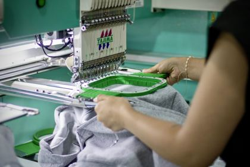
Montaje de la prenda en el bastidor30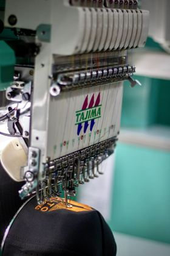
Cabezal bordando31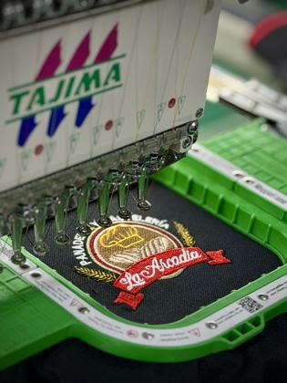
Bordado en curso32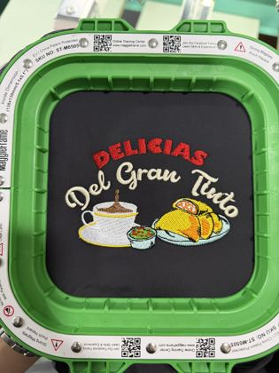
Logo listo en el bastidor33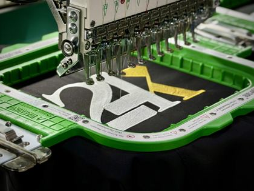
Prenda en plena máquina34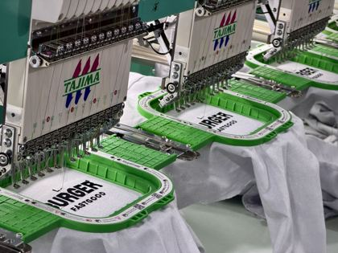
Varios bastidores a la vez Nosotros / planta 5
35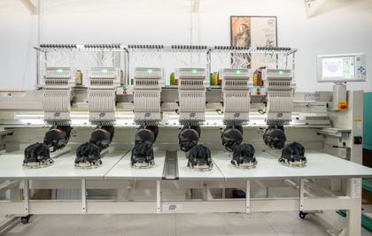
Bordadora de 6 cabezales36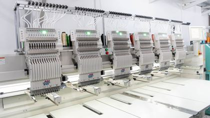
Tajima de 6 cabezales37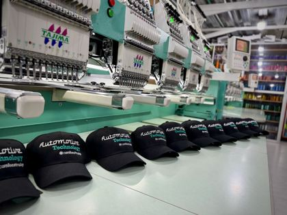
Producción en serie38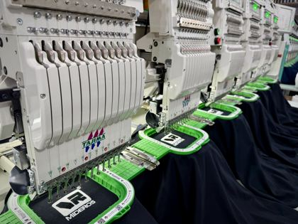
Cabezales trabajando39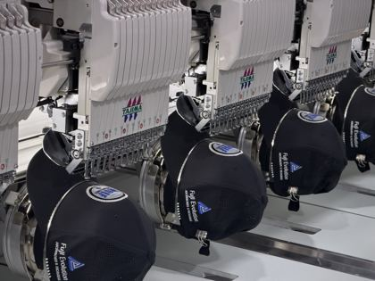
Gorras en las bordadoras